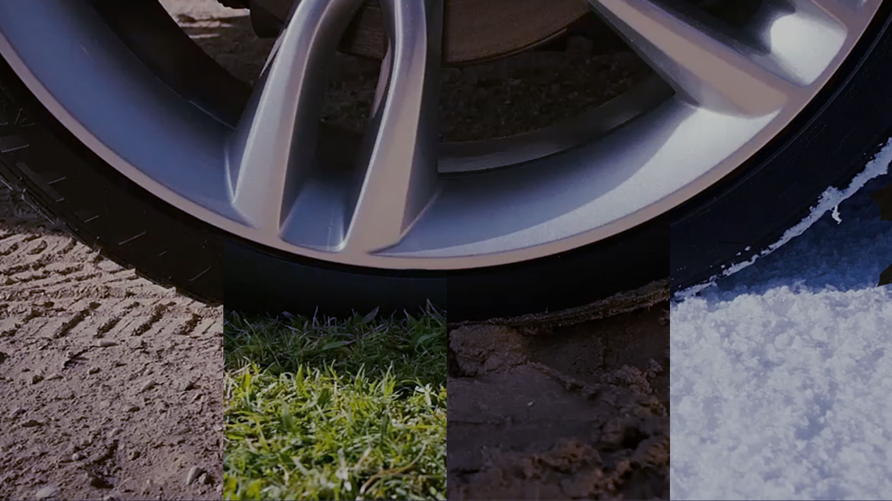
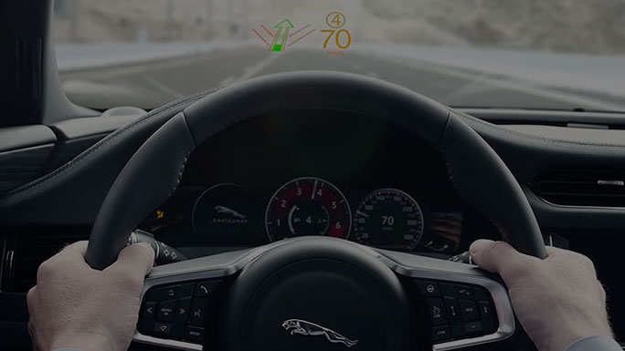

Play Video

TECNOLOGÍA AVANZADA
LAS INNOVADORAS Y AVANZADAS TECNOLOGÍAS DEL NUEVO XF MEJORAN SU EXPERIENCIA DE CONDUCCIÓN, HACIENDO QUE CADA VIAJE SEA MÁS CÓMODO, MEJOR CONECTADO Y MÁS GRATIFICANTE.
ALL SURFACE PROGRESS CONTROL
El exclusivo sistema All Surface Progress Control (ASPC) de Jaguar aumenta la confianza cuando se conduce un XF en firmes deslizantes, ya sea al iniciar la marcha en una carretera con nieve, al aparcar en una pendiente con hielo e incluso al remolcar sobre hierba húmeda.
El sistema ASPC es un control de crucero a baja velocidad que funciona a velocidades de entre 3,6 y 30 km/h y que ayuda al XF a enfrentarse a condiciones de baja tracción, sean cuales sean las condiciones climáticas, para que el conductor pueda concentrarse en controlar la dirección. El ASPC se incluye de serie con todos los motores con transmisión automática.
HEAD-UP DISPLAY CON TECNOLOGÍA LÁSER
El Head-Up display con tecnología láser del nuevo XF le permite centrarse en lo que realmente importa: conducir. Este sistema opcional de última generación proyecta información esencial en el parabrisas. Su imagen ultranítida incluso con luz solar directa muestra la velocidad, datos de navegación, avisos de control de crucero e información del sistema de reconocimiento de señales de tráfico, cuando esté disponible.
PANEL DE INSTRUMENTOS VIRTUAL*
La excelente definición del panel de instrumentos virtual HD del XF hace que la información cobre vida: la pantalla TFT de 12,3 pulgadas sustituye al tradicional tablero de instrumentos. Esta potente instrumentación virtual combina un nuevo y sorprendente diseño con una interfaz totalmente rediseñada y funciones más avanzadas para hacer que la conducción sea una experiencia sumamente gratificante. Puede elegir entre fondos de pantalla preestablecidos o navegación con pantalla completa, en función de sus preferencias.

Play Video
AYUDAS A LA CONDUCCIÓN
El XF incorpora una amplia gama de ayudas a la conducción perfectamente integradas y diseñadas para ofrecerle una experiencia más cómoda y más segura al volante.
CÁMARA ESTÉREO CON FRENO DE EMERGENCIA AUTÓNOMO
El XF está preparado para reaccionar ante una frenada de emergencia. Si la cámara frontal detecta una posible colisión, el XF hace sonar un tono intermitente de aviso de impacto frontal para darle tiempo de reaccionar. La señal acústica va seguida de un aviso visual del proyector de información en el parabrisas (si está instalado) y en el panel de instrumentos. Si el sistema anticipa una colisión sin que el conductor haga algo para evitarla, aplica los frenos para ayudar a reducir la gravedad de un posible impacto.

AYUDAS AVANZADAS AL APARCAMIENTO
Estos sistemas hacen más fácil que nunca el estacionamiento en espacios reducidos. Los sensores miden el espacio y, cuando encuentran un sitio apropiado, permiten que el XF maniobre automáticamente el vehículo hasta aparcarlo para que el conductor sólo tenga que controlar el freno y el acelerador. En espacios de aparcamiento en paralelo, existe una función que ayuda a maniobrar el XF para sacarlo del espacio de aparcamiento. Este sistema de detección de tráfico marcha atrás usa los sensores de monitorización del sistema para detectar vehículos aproximándose que podrían no ser vistos por el conductor, activando una alerta audible y una notificación visual en la pantalla táctil.

AVISO DE CAMBIO INVOLUNTARIO DE CARRIL Y ASISTENTE DE MANTENIMIENTO DE CARRIL CON MONITOR DE FATIGA
El XF está equipado de serie con función de aviso de cambio involuntario de carril, que alerta al conductor cuando detecta que el vehículo abandona el carril de forma no intencionada. Esta función puede complementarse con otra novedosa tecnología: el asistente de mantenimiento de carril (LKA) con monitor de fatiga del conductor (DCM). El monitor de fatiga detecta cambios involuntarios de carril y ayuda a corregir la trayectoria del XF. El DCM, otro de los sistemas que velan por su seguridad, analiza la conducción permanentemente para detectar lapsos de concentración debidos al cansancio. Cuando el sistema detecta posibles señales de somnolencia en el conductor, le sugiere tomarse un descanso mediante un aviso en el panel de instrumentos.
RECONOCIMIENTO DE SEÑALES DE TRÁFICO* CON LIMITADOR DE VELOCIDAD INTELIGENTE*
La tecnología de reconocimiento de señales de tráfico (TSR) de Jaguar utiliza una cámara frontal de alta precisión para detectar límites de velocidad y señales de prohibición de adelantamiento, y mostrárselas al conductor. El sistema tiene en cuenta límites de velocidad temporales, el estado de la carretera y los límites legales de velocidad cuando se conduce con remolque. Cuando está activo, el limitador de velocidad inteligente usa la información del sistema TSR, combinada con información cartográfica del sistema de navegación, para ayudar a mantener al XF por debajo del límite de velocidad aplicable.

SISTEMAS DE SONIDO
Los fabulosos sistemas de sonido del XF hacen que la música cobre vida. El sistema de sonido Jaguar ofrece un amplio espectro acústico a través de 8 altavoces. Los sistemas de sonido Meridian opcionales ofrecen unas prestaciones fuera de serie. Estos sistemas diseñados en colaboración con Meridian, los expertos británicos en audio, incorporan una innovadora tecnología de audio junto con altavoces estratégicamente ubicados para ofrecer una calidad de sonido optimizada.
Elija entre una gama de sistemas de sonido que incluye el nuevo sistema digital de 380 W y el sistema digital Surround Sound de 825 W. Puede estar seguro de que todos ellos ofrecerán a sus pasajeros una experiencia de sonido envolvente y llena de matices desde cualquiera de los asientos.
*Las características descritas más arriba pueden ser opcionales en función del país. Consulte con su distribuidor Jaguar para más información sobre la disponibilidad de estos servicios en su país. La aplicación InControl Remote es compatible con dispositivos Android a partir de la versión 4.1, y con dispositivos iPhone de Apple a partir del iPhone 5. La conexión WiFi requiere tarjeta SIM con contrato de tráfico de datos compatible. Jaguar InControl es una marca registrada de Jaguar Land Rover Limited.